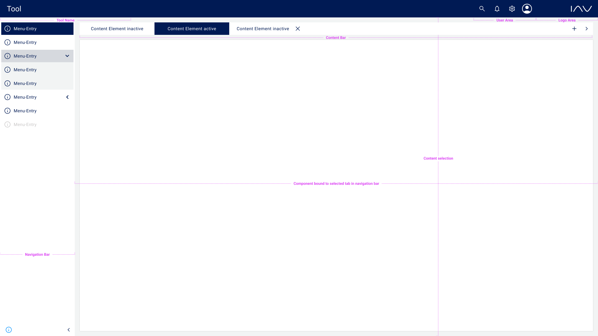
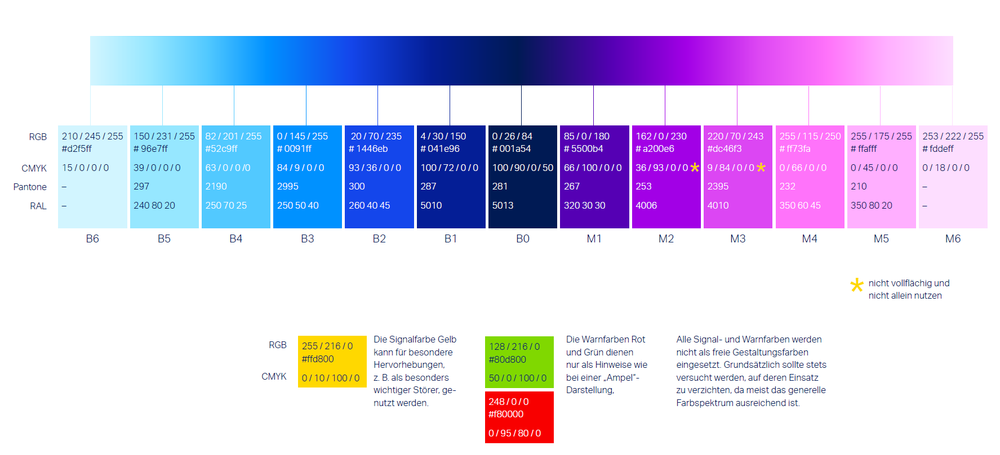

The Framework simplifies the development for the project using it. It does not substitute the basic knowledge of the large field of frontend development.
Please ensure that you have at least installed Node version 16 and npm version 8.
Every time a new version is released, a GitHub release will be created. To receive an email notification for a new release, subscribe to the GitHub repository:
The framework supports JavaScript and TypeScript. It is recommended to use TypeScript for type safety, which will greatly enhance your developer experience and development speed, especially for larger projects. One significant advantage of using TypeScript is the automatic checks for the definition of all mandatory properties of components.
The framework uses ES6 import/export syntax. There are only named exports. The following snippet shows an example of an import using the framework:
import { UILayer } from "@iavofficial/frontend-framework/uiLayer";The framework can be used with React functional components as well as with React class components.
The framework adds a banner for accepting the use of cookies out of the box. The banner is needed in web applications in order to be consistent with legal regulations. If the user accepts the use of cookies, the banner won't be rendered again.
The following image explains the terminology used in this documentation.
The following image show the appearance of the framework when the dark mode is activated.

The following image shows the standardized color spectrum of IAV.
The following image shows the style guide which is based on the IAV corporate design colors and the extension.